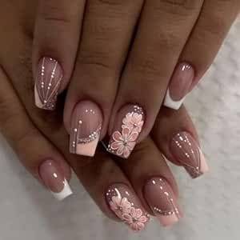
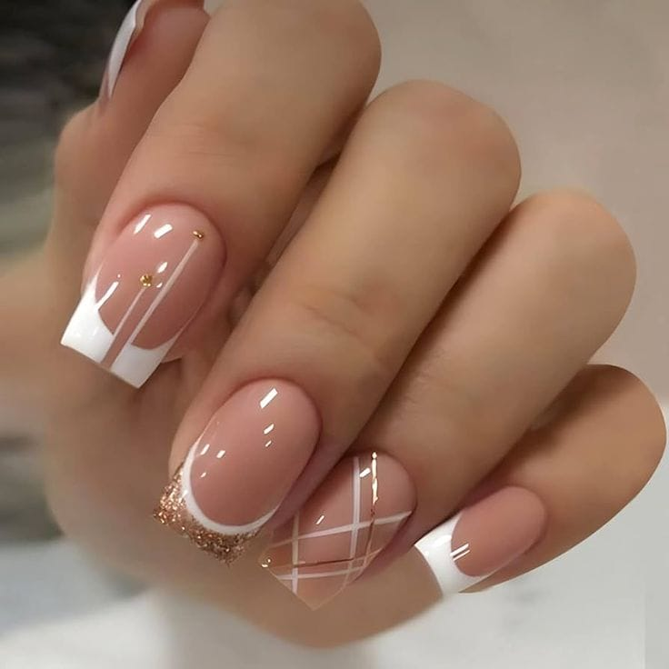
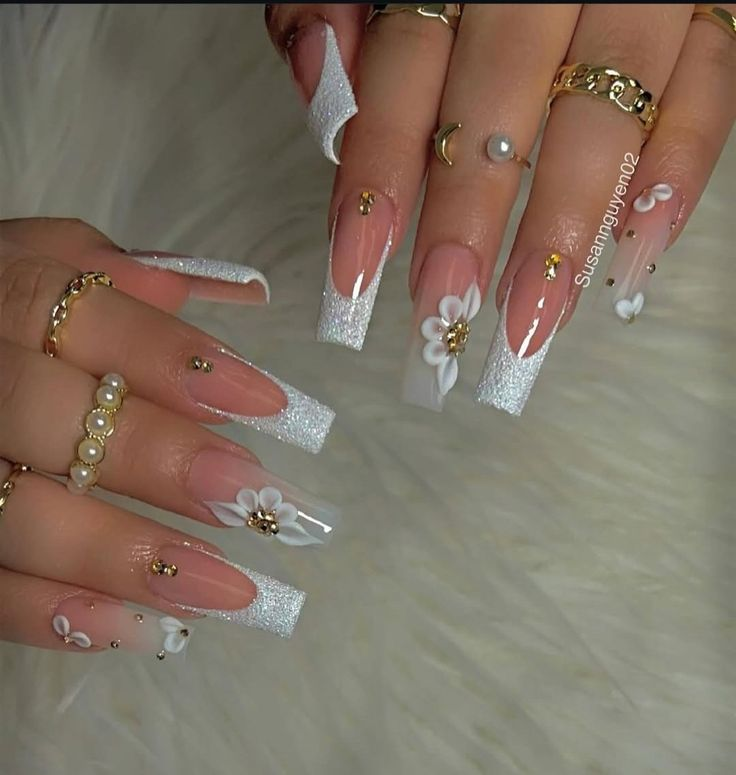
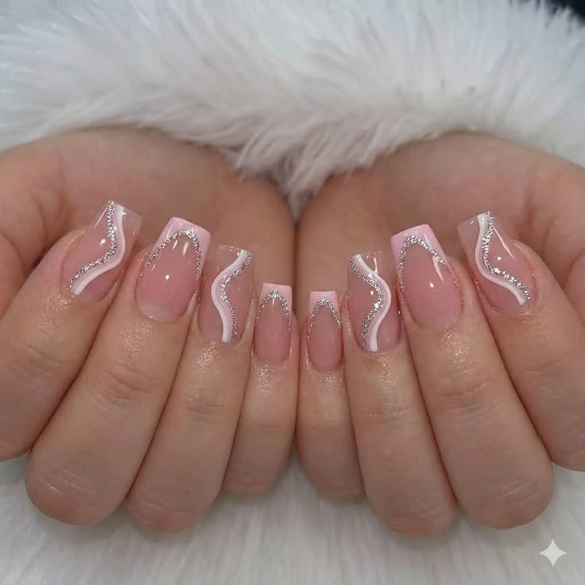
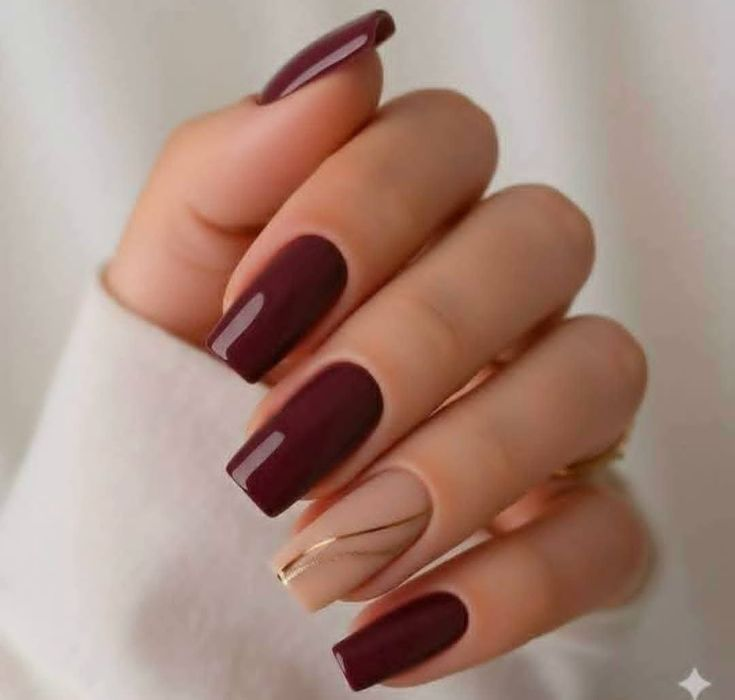
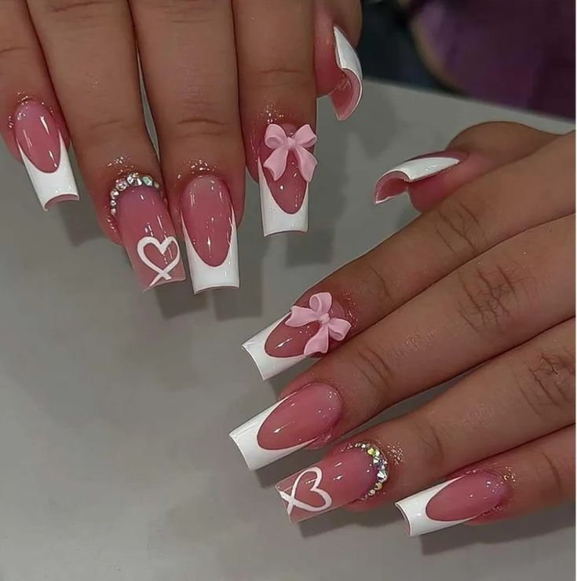
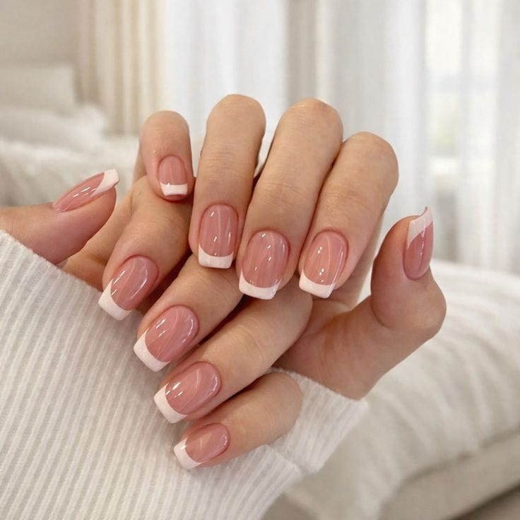
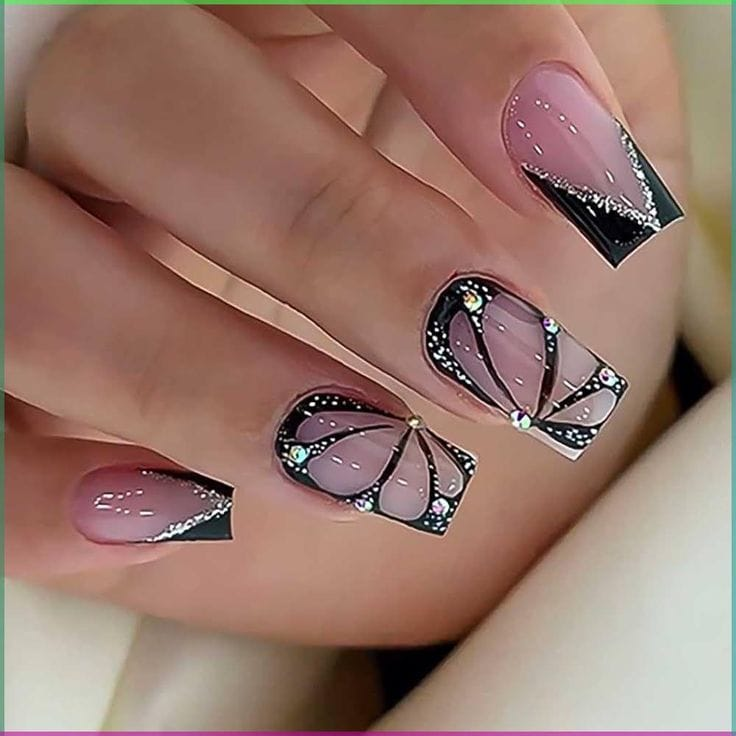

Take a look at our selection of delectable pastries
- Bronana Bread - Our main and most famous product, classic banana bread with a secret ingredient.
- Caffiene Pancakes - A revolutionary take of a classic international breakfast injected with coffee to give you a boost.
- Mama's Scones - Nhlamulo's mom's classic scone recipe that go well with tea.
- You Good Mud? Choc Cake - Thick and moist cake made with high quality
- Tiramisu - Tiramisu cake made with thich Marscapone cream with a coffee flavoured cake base